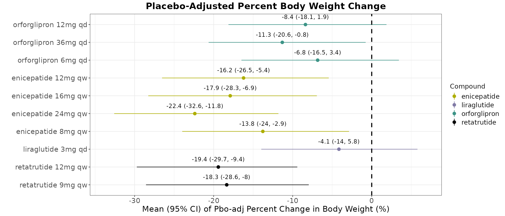
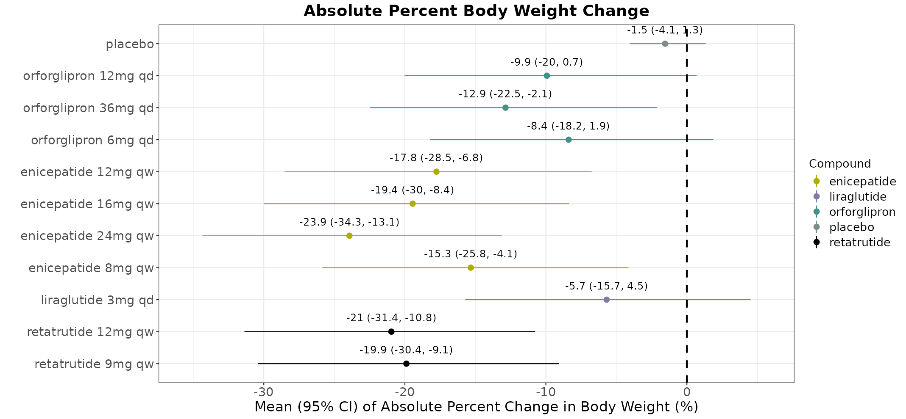

flowchart LR
A["/cmh-ci"] --> B["Review data\n& pick studies"]
B --> C{"New data?"}
C -->|yes| D["Append to QA"]
C -->|no| E["Configure\n& fit model"]
D --> E
E --> F["Forest plots\n+ .Rmd + .html"]
style A fill:#4A90D9,color:#fff
style F fill:#2ECC71,color:#fff
/cmh-ci: A Guided Bayesian Network Meta-Analysis Skill for Cardiometabolic Health Competitive Intelligence
Tutorial and reference for the /cmh-ci Claude Code skill
1 Introduction
Bayesian network meta-analyses of weight-loss and related endpoints across the GLP-1/GIP/amylin competitive landscape are a recurring analytical need within Cardiometabolic Health. These analyses pool evidence across many studies and compounds into a single, comparable forest plot of relative and absolute treatment effects, and they need to be run — and re-run — as new studies and data extracts become available.
A Bayesian Network Meta-Analysis (BNMA) combines evidence from multiple clinical trials to estimate how different treatments compare — even when those treatments were never tested head-to-head. It works by linking trials through shared comparators (typically placebo), forming a “network” of indirect comparisons. At Lilly, the CMH team uses BNMAs to build the competitive landscape — understanding where our compounds stand relative to competitors across the obesity and diabetes portfolio. The primary deliverable is a forest plot showing placebo-adjusted weight loss (or other endpoints like HbA1c) for every treatment in the network, with Bayesian credible intervals. These plots inform competitive intelligence decks, regulatory strategy, and clinical development decisions.
This document introduces /cmh-ci, a Claude Code skill built to guide a statistician through that process end-to-end: from a raw PRD/QA data extract, through study selection, to a fitted BNMA and a reportable result.
1.1 The problem /cmh-ci solves
Before this skill existed, these analyses were produced by running a hand-edited R script against a landscape dataset. The set of studies to include, exclude, or pool together lived as a manually maintained exclusion vector inside the script itself, often accumulating commented-out lines with no record of why a given study was in or out. Changing which studies, compounds, or evidence to consider meant editing that vector directly — a manual step with no structured review before a model was ever fit.
That difficulty is compounded by the shape of the underlying data itself. Studies live across two tiers — a curated, periodically refreshed PRD (production) extract, and a QA (working) tier where new or not-yet-promoted data is actually added — and within a single workbook, evidence is further split across separate Observed and Prediction sheets, each with its own studies, phases, and evidence type. Filenames are dated, and a newer extract can land at any time; treatment and compound names are not always spelled or split identically across rows, and the same underlying study can occasionally appear, differently dosed, in both the Observed and Prediction tiers.
/cmh-ci exists to close that gap. Rather than assuming the user already knows how to locate the right file, reconcile naming across tiers, and assemble a correct model input by hand, it guides them through the entire process as a structured, end-to-end conversation.
1.2 What /cmh-ci produces
Every completed run outputs four deliverables:
- Placebo-adjusted (relative) forest plot — the standard competitive landscape view
- Absolute forest plot — estimated total weight change per treatment
- Re-runnable
.Rmd— open in RStudio, run chunk-by-chunk to reproduce or modify - Pre-rendered
.htmlreport — shareable immediately, no R needed to read
Tip
You don’t have to run the full analysis. Stopping after reviewing the data (Step 1) or after adding new data to QA are both valid, complete sessions.
2 Prerequisites
You’re working on the Lilly HPC cluster, so the heavy dependencies (R, JAGS, and all required R packages) are already installed — nothing to set up. The skill loads them automatically via module load when it runs.
| What you need | Notes |
|---|---|
| Claude Code | The CLI — claude --version to confirm |
| HPC cluster session | SSH’d in or on a compute node |
| Data access | Read access to /lillyce/prd/ and /lillyce/qa/ |
That’s it. R (4.4.2), JAGS (4.3.2), and all R packages (rjags, coda, dplyr, readxl, ggplot2, openxlsx, rmarkdown) are available cluster-wide via modules and the shared R library.
3 Getting Started
3.1 Setup options
Option A: Global install (works from any folder) — place the skill at:
~/.claude/skills/cmh-ci/SKILL.mdOption B: Project-level (works for everyone in that folder):
/lillyce/qa/diabetes/bnma/obesity/
├── .claude/skills/cmh-ci/SKILL.md
└── CLAUDE.md ← optional 5-line pointerThe optional CLAUDE.md pointer lets users know the skill exists:
# CMH Competitive Intelligence — BNMA
Type `/cmh-ci` to run a Bayesian network meta-analysis on the PRD/QA
weight-loss dataset. It walks you through study selection, optional new
data, model fitting, and outputs both forest plots (placebo-adjusted +
absolute), a re-runnable .Rmd, and an .html report.3.2 Starting a session
cd /lillyce/qa/diabetes/bnma/obesity # or your working directory
claude # launch Claude CodeThen type /cmh-ci.
4 The Workflow
Every /cmh-ci invocation starts with a landing page explaining the seven steps. Nothing is read, written, or assumed until you confirm.
4.1 Step 1: Introducing the data and selecting studies
The skill locates the most recently dated PRD extract, reads both the Observed and Prediction sheets, and lists every study together with its phase, route, compound, and treatment arms. Before presenting anything, it runs a naming/pooling check across the two tiers — an exact study_name collision, or a same-compound near-duplicate whose identifiers differ only by a tier-specific suffix — so any ambiguity is visible from the first message rather than surfacing later as a duplicated study in a fitted model.
Example output:
Sheet: Observed | Rows: 42
1. scale maintenance (phase 3, injectable, observed)
-- semaglutide
semaglutide 2.4 mg; placebo
2. believe (phase 3, injectable, observed)
-- tirzepatide
tirzepatide 10 mg; tirzepatide 15 mg; tirzepatide 5 mg; placebo
...You then pick which studies to include — by name, by compound, or confirm the full list.
4.2 Step 2: Deciding whether to add outside data
The skill asks explicitly whether any additional, non-PRD/QA data — a press release, a new readout, hand-digitized data, another workbook, or a link to a publication — should be folded in before fitting. Answering no is a valid outcome: the skill skips straight to model configuration.
4.3 Steps 3–4: Converting and merging outside data
When outside data is supplied — especially a link — the skill extracts study data directly from the source, flags any population/scope mismatch explicitly (e.g. a T2D study against a non-T2D dataset), and asks whether each extracted study is Observed or Predicted rather than inferring it. The mapped rows are shown back in the QA schema for confirmation:
study_name | treatment | compound | phase | pchg_wl_ee | se_wl_ee
------------|-----------------|----------|---------|------------|---------
new-trial-1 | drug-x 10 mg | drug-x | phase 2 | -8.3 | 1.2
new-trial-1 | placebo | placebo | phase 2 | -1.7 | 0.9Once confirmed, rows are appended to the QA workbook, and the QA file is renamed so the date reflects when data was last added:
cwm_wl_nont2d_qa_20260827.xlsx → cwm_wl_nont2d_qa_20260901.xlsx
Important
The QA file rename is an in-place mv — one file at a time, no old copies left behind. The skill tracks the new filename for all subsequent steps.
This loops back to Step 2 — anything else to add? — until you confirm the subset is sufficient.
4.4 Step 5: Confirming the run and building the model input
Before any model is fit, the skill asks whether the goal is actually a full analysis run — reviewing the data, or getting new data into QA, is itself a complete outcome. Only on confirmation does it create working folders and write a manifest recording exactly which studies are included. A study in the manifest that doesn’t match the data (a typo, or a study renamed upstream) is a hard stop, not a silent omission.
4.5 Step 6: Choosing a modelling approach
The statistician is asked once, directly: random-effects (the default) or fixed-effect?
WarningStar network detection
If every non-placebo treatment comes from exactly one study (a “star” network), the skill warns:
“Full star network detected — σ cannot be estimated, CIs will be prior-inflated with random-effects. Recommend fixed-effect.”
This is a recommendation, not an override — you choose. The decision is final for this run.
4.6 Step 7: Fitting the model and producing outputs
The model is fit once via JAGS, and both forest plots are produced from that same fit in a single pass — no separate R processes, no re-reading data. Alongside the plots, the skill writes a re-runnable .Rmd report and renders it to .html.
# What's happening under the hood:
module load R/4.4.2 jags 2>/dev/null
Rscript /tmp/$USER/cmh_ci_lib/run_bnma_pipeline.R \
--prd <prd_path> --qa <qa_path> \
--manifest <manifest.yaml> --model model_random.txt \
--cache /tmp/$USER/cmh_ci_lib/samples.rds \
--fit-placebo --placebo-cache /tmp/$USER/cmh_ci_lib/placebo_samples.rds \
--plot --effect both \
--plot-out <output_folder>/forest_plot_relative.png \
--plot-out-absolute <output_folder>/forest_plot_absolute.pngBoth forest plots are displayed immediately in the terminal.
5 Data
5.1 PRD/QA workbook structure
The PRD and QA workbooks share the same schema. Each file has two data sheets — Observed (from completed trials) and Prediction (model-projected from earlier-phase data) — plus a Summary sheet.
Key columns (grouped by role):
| Group | Columns | What they hold |
|---|---|---|
| BNMA inputs | pchg_wl_ee, se_wl_ee |
% weight change (efficacy estimand) and its SE — the two columns the model fits on |
| Study identity | study_name, treatment, compound, phase |
Which study, arm, molecule, and trial phase |
| Design | n, baseline_wgt, study_duration, aom, population |
Sample size, baseline weight, duration, route (Oral/Injectable), population scope |
| Alternate estimand | pchg_wl_tre, se_wl_tre |
Treatment-regimen estimand (secondary) |
| Provenance | time_entry, source, data_type, sponsor |
When curated, citation/URL, source type, sponsor |
| Curation | curator_name, curator_note, qc_name, qc_note, derivation_spec, analysis_method |
Audit trail — who curated, QC’d, and how values were derived |
Important
Every treatment arm must have both pchg_wl_ee and se_wl_ee. If SE is not reported, it can be approximated as fallback_sd / sqrt(n) — the skill helps compute this during data entry.
5.2 How PRD and QA relate
flowchart LR
A["PRD\n(read-only)"] --> C["Merge"] --> D["BNMA → plots"]
B["QA\n(new data here)"] --> C
style A fill:#3498DB,color:#fff
style B fill:#E67E22,color:#fff
- PRD (
/lillyce/prd/...) — the validated, production-tier dataset. Read-only. Updated periodically by the team through the normal curation process. - QA (
/lillyce/qa/...) — the living working copy. New data lands here first via the skill’s append flow, then eventually gets promoted to PRD through team review.
When fitting, QA rows override PRD rows for the same study_name + treatment (by keeping the row with the latest time_entry).
6 Statistical Methods
6.1 The BATMAN data structure
Before fitting, the skill converts the tabular data into BATMAN matrices — the input format JAGS expects:
| Symbol | Dimension | Meaning |
|---|---|---|
| \(y_{ij}\) | \(ns \times \max(n_a)\) | Observed effect (% weight change) for study \(i\), arm \(j\) |
| \(se_{ij}\) | \(ns \times \max(n_a)\) | Standard error of \(y_{ij}\) |
| \(trt_{ij}\) | \(ns \times \max(n_a)\) | Treatment index for study \(i\), arm \(j\) (1 = placebo) |
| \(n_a[i]\) | \(ns\) | Number of arms in study \(i\) |
| \(ns\) | scalar | Total number of studies |
| \(M\) | scalar | Total number of treatments (including placebo) |
6.2 The underlying model
At its core, /cmh-ci fits a BNMA using the same model specification as Lilly’s production CMH.BNMA Shiny application. Each study \(i\) contributes one or more arms \(j\), and the arm-level effect estimate is modelled as:
\[ y_{i,j} \sim \text{Normal}\!\left(\eta_{i,j},\ se_{i,j}^2\right) \]
where \(\eta_{i,j}\) is a linear predictor built from a study-specific baseline \(\phi_i\) and a treatment effect \(\delta_{i,j}\):
\[ \eta_{i,j} = \phi_i + \delta_{i,j} \]
Two independent modelling choices govern how \(\phi_i\) and \(\delta_{i,j}\) are specified, and together they define the four network-model variants:
- Baseline (\(\phi_i\)) — either a flat, study-specific prior, \(\phi_i \sim \text{Normal}(0, 10^{4})\), used for the relative (placebo-adjusted) analysis; or a hierarchical, pooled baseline, \(\phi_i \sim \text{Normal}(m, \tau_m^2)\) with its own mean \(m\) and between-study variance \(\tau_m^2\), used when an absolute effect is needed.
- Treatment effect (\(\delta_{i,j}\)) — either random-effects, \(\delta_{i,j} \sim \text{Normal}\!\big((d_{t_{ij}} - d_{t_{i1}}) + sw_{ij},\ \tau^2 \cdot \tfrac{2(j-1)}{j}\big)\) with a shared heterogeneity \(\sigma \sim \text{Uniform}(0, 8)\) (the default); or fixed-effect, \(\delta_{i,j} = (d_{t_{ij}} - d_{t_{i1}}) + sw_{ij}\), used for star networks where \(\sigma\) cannot be reliably estimated.
\(d_k\) is the summary treatment effect for treatment \(k\) relative to placebo (\(d_1 = 0\)), with a vague prior \(d_k \sim \text{Normal}(0, 10^{4})\) — these \(d_k\) values and their 95% credible intervals are what the placebo-adjusted forest plot displays. The \(sw_{ij}\) term is the multi-arm correction (Higgins & Whitehead, 1996) ensuring correlated arms within the same trial aren’t treated as independent evidence.
Note
The \(\sigma\) parameter captures between-study heterogeneity — how much the treatment effect varies across studies beyond sampling error. A larger \(\sigma\) means wider credible intervals. In a star network (one study per treatment), \(\sigma\) cannot be estimated from the data and the model falls back on its prior, inflating the intervals — this is why fixed-effect is recommended for star networks.
For the absolute-effect forest plot, a separate pooled-placebo model is fit against only the placebo arms:
\[ y^{\text{pbo}}_i \sim \text{Normal}\!\big(\mu_{s_i},\ se^{\text{pbo}}_i{}^2\big), \qquad \mu_i \sim \text{Normal}(m, \sigma_m^2), \qquad \mu_{\text{new}} \sim \text{Normal}(m, \sigma_m^2) \]
The absolute effect for treatment \(k\) is then \(\mu_{\text{new}} + d_k\).
6.3 Model variants
| Model | Baseline \(\phi_i\) | Treatment \(\delta_{ij}\) | Use for |
|---|---|---|---|
model_random.txt (default) |
flat prior | random-effects | Standard placebo-adjusted forest |
model_fixed.txt |
flat prior | fixed-effect | Star networks / sensitivity check |
model_simultaneous.txt |
pooled hierarchical | random-effects | Absolute-effect forest |
model_simultaneous_fixed.txt |
pooled hierarchical | fixed-effect | Absolute forest on star networks |
model_placebo_random.txt |
— | — | Pooled placebo baseline |
6.4 MCMC settings
All models are fit with the same settings, matching EliLillyCo/CMH.BNMA:
| Parameter | Value |
|---|---|
| Adaptation | 10,000 |
| Burn-in | 10,000 |
| Iterations | 20,000 |
| Thinning | 10 |
| Chains | 3 |
| Effective samples | 6,000 |
7 Results
Fitting the workflow above against the cwm_wl_nont2d PRD/QA dataset (run of 2026-08-28) produces the two forest plots below: a placebo-adjusted (relative) effect plot (Figure 1 (a)) and an absolute effect plot (Figure 1 (b)).
Figure 1 (a) shows each dose’s mean percent change in body weight relative to placebo, with its 95% credible interval. A point estimate further to the left is a larger weight-loss effect; an interval that does not cross zero indicates the effect is distinguishable from placebo. Figure 1 (b) shows the same doses on an absolute scale — the \(\mu_{\text{new}} + d_k\) construction described in Statistical Methods.


/cmh-ci run on the cwm_wl_nont2d dataset (2026-08-28).
NoteKey findings from this run
- Enicepatide 24mg qw shows the largest placebo-adjusted effect, at −22.4% (95% CI: −32.6, −11.8), and its interval excludes zero at every studied dose.
- Retatrutide at both doses (9mg and 12mg qw) also shows large effects: −18.3% (−28.6, −8.0) and −19.4% (−29.7, −9.4).
- Orforglipron is dose-dependent: its lower doses (6mg, 12mg qd) have intervals including zero, while its highest (36mg qd) does not (−11.3%, 95% CI −20.6 to −0.8).
- Liraglutide 3mg qd’s interval includes zero (−4.1%, 95% CI −14.0 to 5.8).
These figures come from one specific run; a different study selection or data extract would produce different results. What doesn’t change is the set of outputs every run produces — the two plots plus the .Rmd/.html pair that records exactly how these numbers were produced.
8 Understanding the Outputs
8.1 The .Rmd report
The .Rmd is not just documentation — it is the re-runnable analysis script. It contains six R code chunks:
| Chunk | What it does |
|---|---|
| 1. Setup | Load libraries, define paths, config variables |
| 2. Data load | Read PRD/QA, merge, filter to included studies |
| 3. Build BATMAN | Construct JAGS matrices (\(y\), \(se\), \(trt\), \(n_a\), \(ns\), \(M\)) |
| 4. Fit model | JAGS model definition, jags.model(), burn-in, coda.samples() |
| 5. Results | Extract posteriors, build result table, fit pooled-placebo |
| 6. Forest plots | Render both relative and absolute, save PNGs |
To re-run an analysis: open report.Rmd in RStudio, ensure module load R/4.4.2 jags is active, and run chunks sequentially (Ctrl+Shift+Enter). Edit paths or study lists as needed, then re-run.
Tip
Each chunk is self-contained enough to re-run from any point if the earlier objects are in your workspace. Want to re-render plots with different styling? Jump straight to Chunk 6.
8.2 The .html report
The .html is a pre-rendered readable version — shareable by email or on SharePoint, no R needed. It contains the data provenance, study list, design choices, all six code chunks (displayed but not executed), and links to the output plots.
Both files live in the programs folder:
/lillyce/qa/diabetes/bnma/obesity/programs/YYYYMMDD_<slug>/
├── report.Rmd
└── report.html9 Common Scenarios
9.0.1 “I just want to see what’s in the data”
Type /cmh-ci, confirm the landing page, review the study listing in Step 1. When asked about new data or running the BNMA, say no. Nothing is written, no folders created.
9.0.2 “I have a new press release to add”
Run /cmh-ci through the full flow. At Step 2, say yes and paste the link or data. The skill maps it to QA schema, shows rows for confirmation, appends and renames the QA file. Then fit the BNMA or stop there.
9.0.3 “Re-run last month’s analysis with updated data”
Open the previous run’s report.Rmd in RStudio. Update file paths in Chunk 1 if they’ve changed, then run all chunks. Or run /cmh-ci fresh — it picks up the latest PRD and QA files automatically.
9.0.4 “Switch from random-effects to fixed-effects”
At Step 6, choose fixed-effect. Or edit model_type in an existing report.Rmd and re-run from Chunk 4.
10 File Locations
| What | Path |
|---|---|
| PRD data | /lillyce/prd/diabetes/bnma/obesity/data/shared/weight/cwm_wl_nont2d_prd_YYYYMMDD.xlsx |
| QA data | /lillyce/qa/diabetes/bnma/obesity/data/shared/weight/cwm_wl_nont2d_qa_YYYYMMDD.xlsx |
| Programs (per run) | /lillyce/qa/diabetes/bnma/obesity/programs/YYYYMMDD_<slug>/ |
| Output (per run) | /lillyce/qa/diabetes/bnma/obesity/output/shared/YYYYMMDD_<slug>/ |
| Skill (global) | ~/.claude/skills/cmh-ci/SKILL.md |
| Skill (project) | <project>/.claude/skills/cmh-ci/SKILL.md |
11 FAQ
11.0.1 “R or JAGS not found”
The skill loads modules automatically. If it fails, check availability: module avail R / module avail jags. If you’re on a login node without modules, connect to a compute node first.
11.0.2 “Star network detected — what does this mean?”
Every non-placebo treatment comes from exactly one study. The heterogeneity parameter \(\sigma\) can’t be estimated — the model relies on its prior, inflating credible intervals. Switching to fixed-effect removes \(\sigma\) and gives tighter, more interpretable intervals.
11.0.3 “The skill takes too long”
The JAGS MCMC fit is the bottleneck (~3–5 min for a typical network). This matches the production CMH.BNMA app’s runtime. Everything else takes seconds.
11.0.4 “Can I edit the .Rmd and re-render?”
Yes — that’s the point. Modify what you need, re-run chunks, then:
module load R/4.4.2
Rscript -e 'rmarkdown::render("report.Rmd", output_format = "html_document")'11.0.5 “Where did my QA file go?”
When you append new data, the QA file is renamed to today’s date. There’s always exactly one file:
ls -lt /lillyce/qa/diabetes/bnma/obesity/data/shared/weight/cwm_wl_nont2d_qa_*.xlsx12 Summary
/cmh-ci turns the earlier, manually maintained analysis script into a guided, seven-step conversation: it introduces the PRD/QA landscape before asking for any decision, runs a deterministic naming/pooling check across the Observed and Prediction tiers before a model is ever fit, and only proceeds to a BNMA once the statistician has explicitly confirmed both the study selection and the intent to run one. The underlying statistical model — a shared likelihood with two toggles selecting between placebo-adjusted/absolute and random-/fixed-effects variants — matches Lilly’s production CMH.BNMA application verbatim, so a result produced this way is not a new or separate model, just a guided, auditable path to the same one. Every completed run leaves behind the same deliverables: the forest plots themselves, and a re-runnable .Rmd/.html report pair that records exactly which data and which decisions produced them — the audit trail the earlier, hand-edited-script workflow never had.